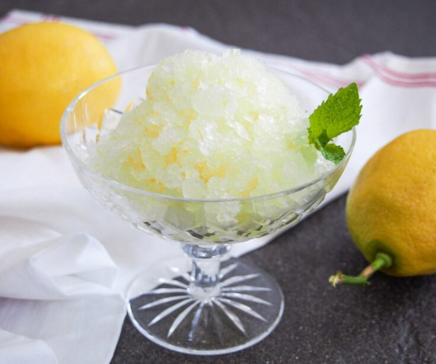

Lemon-Lime Granita

Description
granitas are very simple yet tasty to make! they can be healthy too! these are perfect for hot summer days!
Ingredients
- lemons or limes (or both!)
- water
- sugar
Steps
- first mix the juice of a lemon/lime (or both) into water
- add sugar to it and dissolve
- put mixture into the freezer for 2 hours
- take out mixture, and scrape it around using a fork to break apart the frozen parts
- keep repeating until it is full a shaved, frozen mixture!